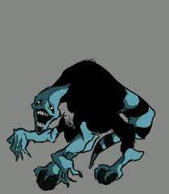
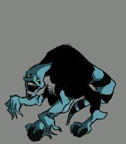

Aproveite o site, parabéns!!
SEJA BEM VINDO(a)
Nesse site voce irá descobrir sobre o que quiser do Carnitrix
O que é o Carnitrix?
O CARNITRIX é uma versão piorada do omnitrix que o Azmuth criou o relógio para aniquilar qualquer espécie ser viva inferior a dele.
Nesse A.U o filgax e o tetrax são policiais intergalaticos que iriam prender o Azumth e levar ele para uma prisão espacial, mas antes disso, ele acabou se suicidando deixando uma seguinte frase: Se eu não causar dor e agonia, alguém o fará, com isso o relógio é mandado para a terra que seria o planeta mais fraco do universo, e todos seriam manipulados pelo relógio.Como são os Aliens do Carntrix?
 
